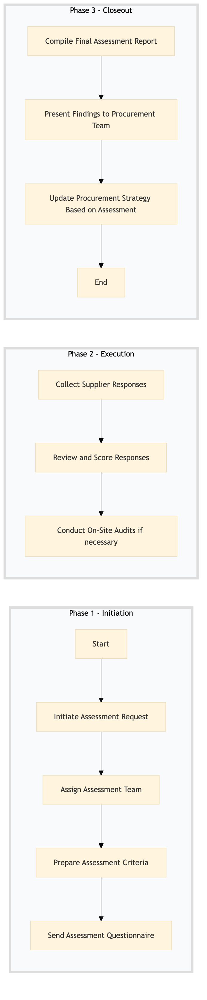

| Role | Steps |
|---|---|
| Sustainability Manager | 1.1 1.2 3.1 3.2 |
| Sustainability Specialist | 1.3 1.4 2.1 2.2 |
| Procurement Manager | 3.3 |
| Step | Name | Role | System | Input | Output | KPI | Dec? | Exc? | Pain Point / Risk |
|---|---|---|---|---|---|---|---|---|---|
| 1.1 | Initiate Assessment Request | Sustainability Manager | Oracle OPERA Cloud | Supplier list from Birchstreet Procurement | Assessment request form in Oracle OPERA Cloud | Less than 1 hour | N | Y | Delays in initiating the assessment due to system integration issues. |
| 1.2 | Assign Assessment Team | Sustainability Manager | Oracle OPERA Cloud | Assessment request form | Team assignment in Oracle OPERA Cloud | Less than 30 minutes | N | Y | Inconsistent team availability for assessments. |
| 1.3 | Prepare Assessment Criteria | Sustainability Specialist | Oracle OPERA Cloud | Supplier list | Assessment criteria document in Oracle OPERA Cloud | Less than 2 hours | N | Y | Updating criteria for new sustainability standards. |
| 1.4 | Send Assessment Questionnaire | Sustainability Specialist | Birchstreet Procurement | Assessment criteria document | Sent questionnaire to suppliers | Less than 1 hour | N | Y | Low response rates from suppliers. |
| 2.1 | Collect Supplier Responses | Sustainability Specialist | Birchstreet Procurement | Completed questionnaires | Collected responses in Oracle OPERA Cloud | Less than 3 days | N | Y | Incomplete or inaccurate supplier data. |
| 2.2 | Review and Score Responses | Sustainability Specialist | Oracle OPERA Cloud | Collected responses | Scoring report in Oracle OPERA Cloud | Less than 1 day | N | Y | Subjectivity in scoring criteria interpretation. |
| 2.3 | Conduct On-Site Audits (if necessary) | Sustainability Manager | Oracle OPERA Cloud | Scoring report | Audit findings in Oracle OPERA Cloud | Less than 2 weeks | Y | Y | Logistical challenges for on-site visits. |
| 3.1 | Compile Final Assessment Report | Sustainability Manager | Oracle OPERA Cloud | Audit findings and scoring report | Final assessment report in Oracle OPERA Cloud | Less than 1 day | N | Y | Time-consuming data synthesis for the report. |
| 3.2 | Present Findings to Procurement Team | Sustainability Manager | Oracle OPERA Cloud | Final assessment report | Presentation slides in Oracle OPERA Cloud | Less than 1 hour | N | Y | Effective communication of complex sustainability data. |
| 3.3 | Update Procurement Strategy Based on Assessment | Procurement Manager | Birchstreet Procurement | Presentation slides | Updated procurement strategy in Birchstreet Procurement | Less than 1 week | N | Y | Aligning procurement decisions with sustainability goals. |
A process to assess sustainability suppliers at a Marriott full-service hotel, ensuring compliance with environmental standards and reducing operational impact.